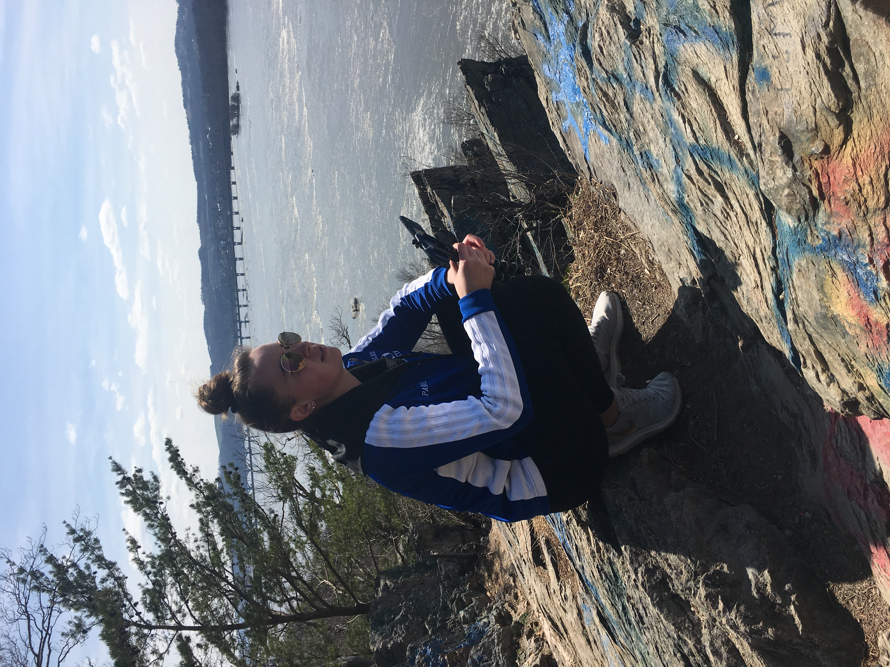
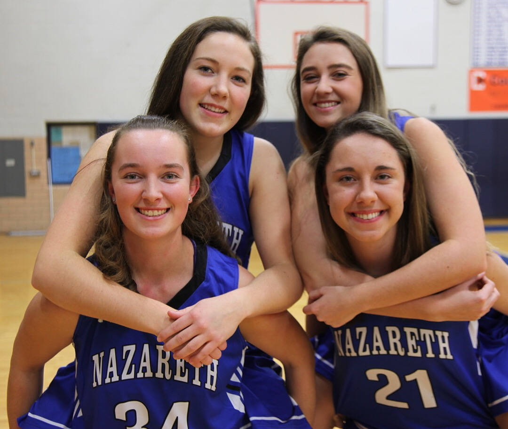
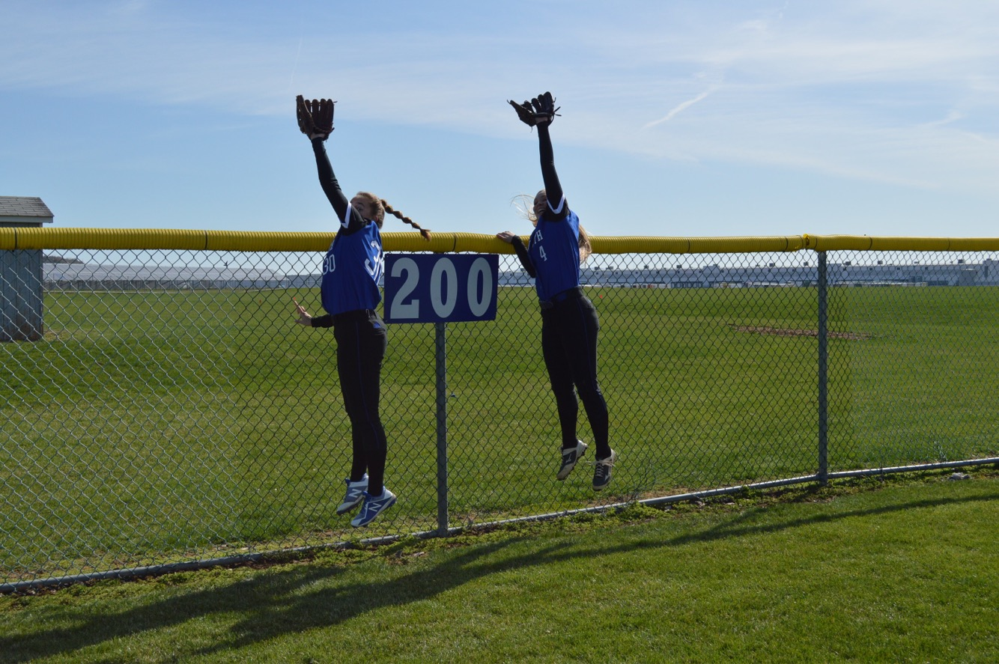
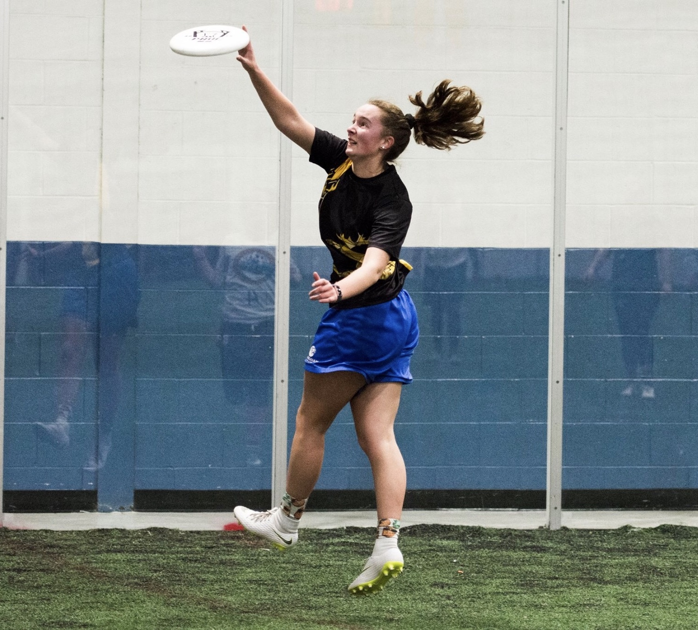
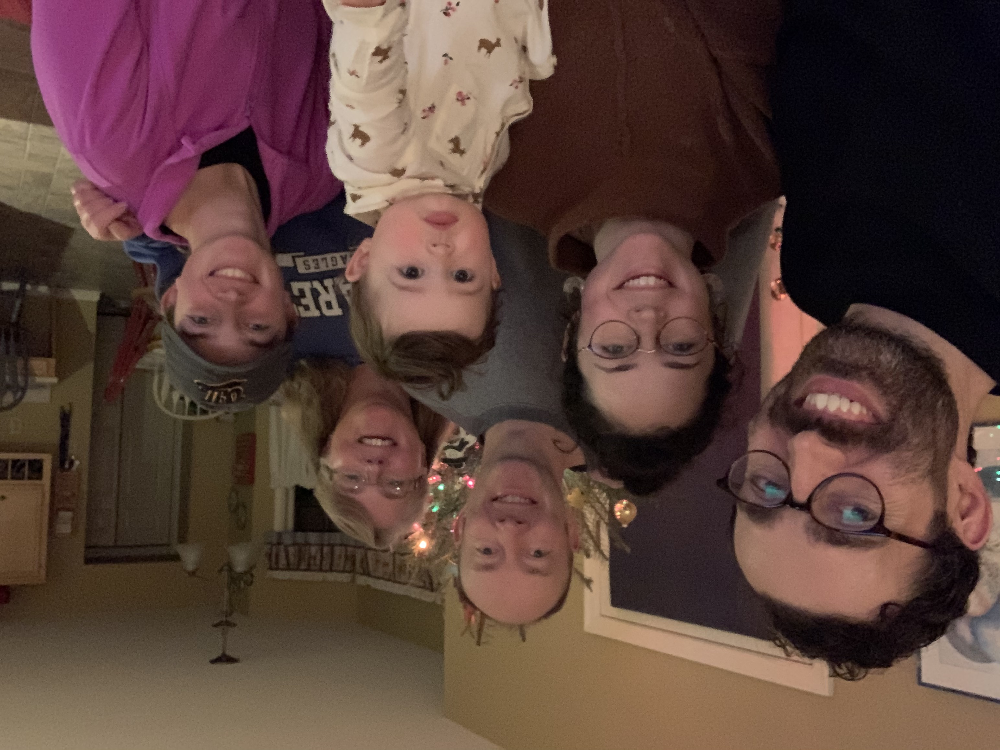
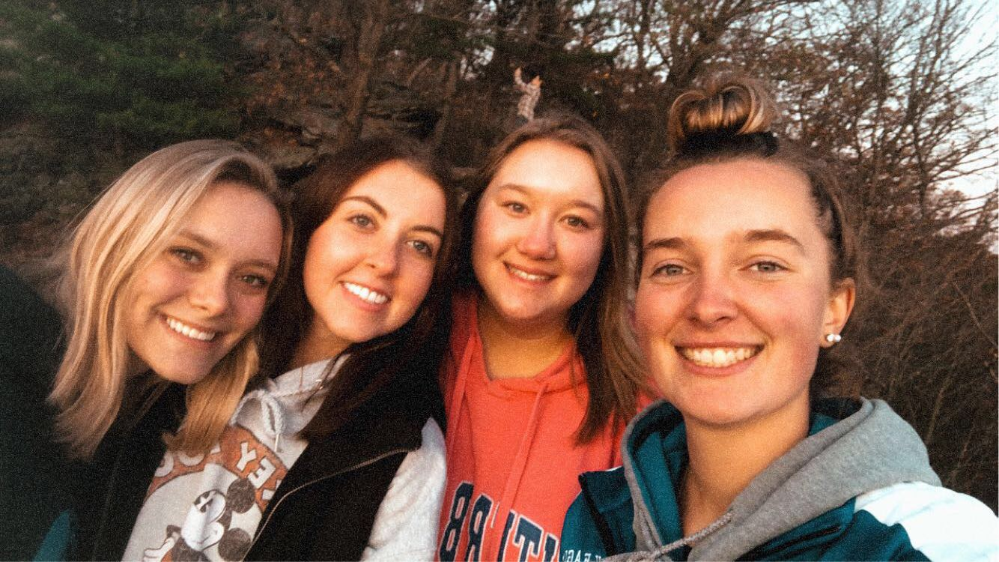
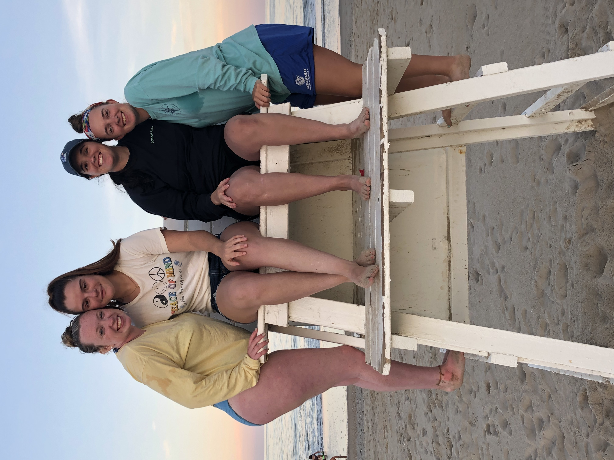
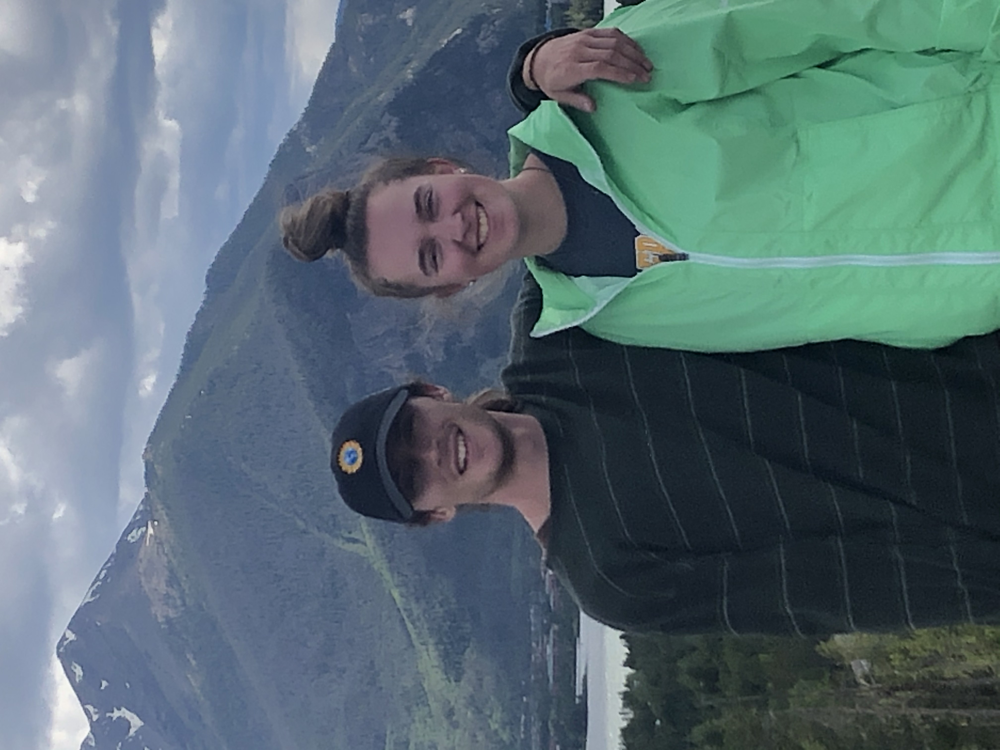

Welcome to my All About Me webpage!
I am a senior here at Millersville University, majoring in Applied Engineering and Technology Management with a Computer Aided Drafting & Design concentration.
This past summer I was a Computer Drafting Intern for a company called Spirk Brothers located in Easton, Pa. I am now working remotely for the company helping them create floor plans for townhomes that are planned to be built on a country club owned by the company.
I have a lot of hobbies as I am someone who will enjoy whatever it is I am partaking in. I have split them up to make it easier to follow.
Up first is my creative side. This includes things such as:
I have my own photography page on Instagram that can be found here
Next is the athlete side of me. I played many sports in highschool which included:
I started playing Ultimate Frisbee here at Millersville which can be seen with the photos below
|  |  |  |
Third on the list is my family and friends. My family consists of:
I love hanging out with my friends whenever I can and doing crazy activities. I am someone who loves to visit my parents at home so I try to see them whenever I can.
Here are some photos of my family and friends
|  |  |  |  |
Last on the list is Travel. I absolutley love traveling and have big dreams for international travels when I'm older.
Some of the places I have traveled to include:
I use my photography page on Instagram to highlight the beautiful views from the places I have traveled to.